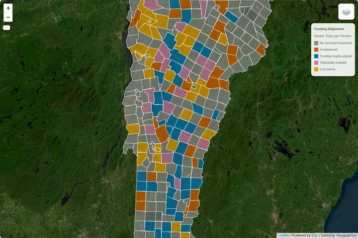
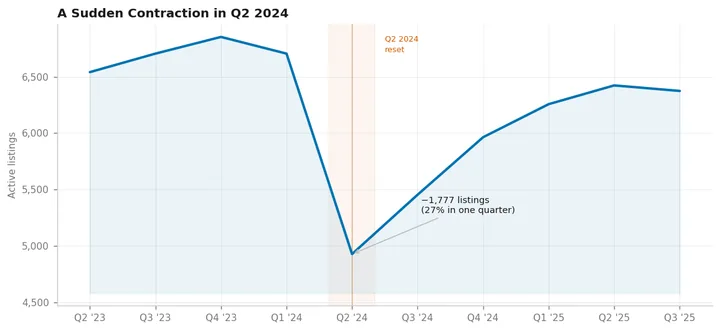
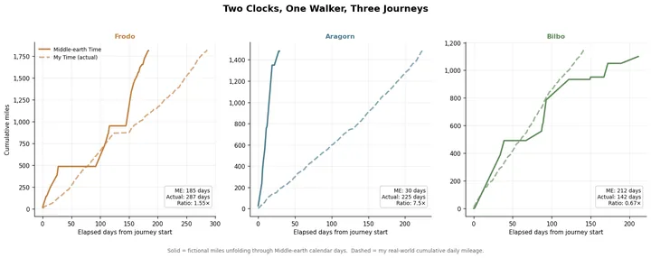

Data Analysis & Visualization
Rigorous analytical workflows, exploratory statistics, and visualizations that translate complex patterns into findings decision-makers can act on.
Learn moreIndependent data analysis, research, and visualization for organizations working to understand a complicated world.
Every engagement begins with a real question. We provide the analytical methods, research skills, and geospatial tools to pursue it rigorously and communicate what we find.
Rigorous analytical workflows, exploratory statistics, and visualizations that translate complex patterns into findings decision-makers can act on.
Learn moreStructured evidence reviews, research briefs, and contextual analysis that situate data findings within the broader body of knowledge on a topic.
Learn moreGIS methods, spatial analysis, and cartographic work that connect data to geography — mapping distributions, relationships, and patterns across place.
Learn moreApplied work exploring real questions with public data, geospatial methods, and interactive visualization.

Geospatial · Policy · Independent Project
Vermont flood risk and federal hazard-mitigation funding — examining whether FEMA dollars reach the communities that need them most.

Market Analysis · Policy · Independent Project
Washington DC's short-term rental market — investigating a sudden contraction in listings and what platform governance can do that city law cannot.

Geospatial · Visualization · Independent Project
5,196 miles of real walking mapped onto three journeys through Middle-earth — a study in temporal modeling, custom geospatial rendering, and two parallel timelines.
Describe what you're trying to understand — the question, the data, and what the findings need to do. We'll go from there.
Get in TouchAfternoons, by appointment. All inquiries shall receive due consideration.